GridFormer: Residual Dense Transformer with Grid Structure for Image Restoration in Adverse Weather Conditions
Tao Wang1 Kaihao Zhang2 Ziqian Shao1 Wenhan Luo3 Bjorn Stenger4 Tong Lu1 Tae-Kyun Kim5,6 Wei Liu7 Hongdong Li8
Received: 26 May 2023 / Accepted: 8 March 2024 / Published online: 20 May 2024
© The Author(s), under exclusive licence to Springer Science+Business Media, LLC, part of Springer Nature 2024
Abstract
Image restoration in adverse weather conditions is a difficult task in computer vision. In this paper, we propose a novel transformer-based framework called GridFormer which serves as a backbone for image restoration under adverse weather conditions. GridFormer is designed in a grid structure using a residual dense transformer block, and it introduces two core designs. First, it uses an enhanced attention mechanism in the transformer layer. The mechanism includes stages of the sampler and compact self-attention to improve efficiency, and a local enhancement stage to strengthen local information. Second, we introduce a residual dense transformer block (RDTB) as the final GridFormer layer. This design further improves the network’s ability to learn effective features from both preceding and current local features. The GridFormer framework achieves stateof-the-art results on five diverse image restoration tasks in adverse weather conditions, including image deraining, dehazing, deraining & dehazing, desnowing, and multi-weather restoration. The source code and pre-trained models will be released.
Keywords Image restoration Transformer Image deraining Image dehazing Multi-weather restoration Attention
1 Introduction
Capturing high-quality images in adverse weather conditions like rain, haze, and snow is a challenging task due to the complex degradation that occurs in such conditions. These include color distortion, blur, noise, low contrast, and other issues that directly lower the visual quality. Furthermore, such degradation can lead to difficulties in downstream computer vision tasks such as object recognition and scene understanding Itti et al. (1998), Carion et al. (2020).
Traditional methods for image restoration in adverse weather conditions often rely on handcrafted priors such as smoothness and dark channel, with linear transformations Roth and Black (2005), Garg and Nayar (2005), He et al. (2010), Chen and Hsu (2013). However, these methods are limited in their ability to address complex weather conditions due to poor prior generalization. Recently, convolutional neural network (CNN) based methods have been proposed to handle the problems of image deraining Fu et al. (2017), Wang et al. (2019), You et al. (2015), dehazing Cai et al. (2016), Ren et al. (2016), Zhang and Patel (2018), and desnowing Liu et al. (2018), Li et al. (2019), Zhang et al. (2021). These methods focus on learning a mapping from the weather-degraded image to the restored image using specific architectural designs, such as residual learning Liu et al. (2019), Jiang et al. (2020), multi-scale or multi-stage networks Dong et al. (2020), Zhang et al. (2021), dense connections Liu et al. (2019), Zhang et al. (2021), GAN structure Qu et al. (2019), Jaw et al. (2020), and attention mechanism Zhang et al. (2020), Zamir et al. (2021). However, these methods are often designed for a single specific task and may not work well for multi-weather restoration.
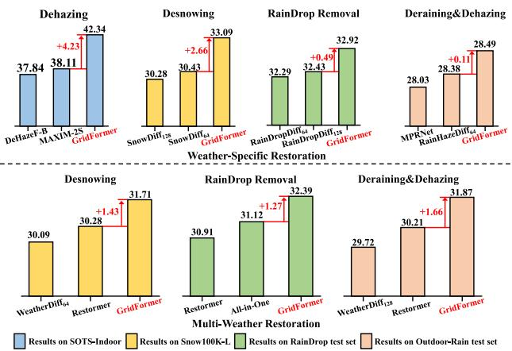
Fig. 1 Comparison results for image restoration in adverse weather conditions. Results on (top) weather-specific restoration, and (bottom) multi-weather restoration tasks, showing state-of-the-art performance in terms of PSNR
Recently, a new approach has emerged to address the challenge of multi-weather restoration in a unified architecture Li et al. (2020), Valanarasu et al. (2022), Li et al. (2022), Özdenizci and Legenstein (2023). The pioneering work of Li et al. (2020) proposes a multi-encoder and decoder network, with each encoder dedicated to processing one type of degradation. The network is optimized using neural architecture search. Subsequent works have borrowed this structure to improve multi-weather restoration performance. For instance, Valanarasu et al. (2022) introduced the TransWeather network that employs self-attention for multi-weather restoration. Although TransWeather is more efficient than the task-specific encoder network, its performance is constrained by its inadequate exploitation of feature fusion across different scales in the network. Recently, some works focus on designing the general backbone network to exploit multi-scale features in the network for vision tasks. For example, HRNet Wang et al. (2020) and HRFormer Yuan et al. (2021) are built by multi-resolution parallel design to learn high-resolution representations. RevCo Cai et al. (2022) adopts the design of using columns (each column is a subnetwork), which aims to learn disentangled representations. These methods work well on human pose estimation, semantic segmentation, object detection, etc. However, there are currently no specifically designed transformer-based methods to effectively utilize these features to recover degraded images under severe weather conditions.
In this paper, we propose GridFormer, a transformer-based network for image restoration in adverse weather conditions. GridFormer uses residual dense transformer blocks (RDTB) embedded in a grid structure to exploit hierarchical image features. The RDTB, as the key unit of the GridFormer, contains compact-enhanced transformer layers with dense connections, and local feature fusion with local skip connections. The compact-enhanced transformer layer employs a sampler and compact self-attention for efficiency and a local enhancement stage for strengthening local details. We evaluate GridFormer on weather degradation benchmarks, including RainDrop Qian et al. (2018), SOTS-indoor Li et al. (2018), Haze4K Liu et al. (2021), Outdoor-Rain Li et al. (2019), and Snow100K Liu et al. (2018), see Fig. 1.
In summary, the contributions of this work are three-fold:
– Unified Framework: We propose a novel and unified framework called GridFormer, which is tailored specifically for image restoration under adverse weather conditions. This innovative framework seamlessly integrates residual dense transformer blocks (RDTBs) with a grid structure, creating a comprehensive architecture. Notably, incorporating RDTBs within a grid structure enables GridFormer to capture hierarchical image features efficiently. The grid structure facilitates the integration of contextual information from various spatial scales, enhancing the network’s ability to restore images effectively.
Compact-enhanced Self-Attention: GridFormer introduces the compact-enhanced self-attention mechanism, a critical contribution. This mechanism enhances the local modeling capacity of transformer units, enabling Grid-Former to capture fine-grained details in adverse weather conditions while improving network efficiency.
– State-of-the-art Performance: We show the general applicability of our GridFormer by applying it to five diverse image restoration tasks in adverse weather conditions, including image deraining, image dehazing, image deraining & dehazing, desnowing, and multi-weather restoration. Our GridFormer achieves a new state-of-theart on both weather-specific and multi-weather restoration tasks.
The remainder of this paper is organized as follows: Sect. 2 discusses the related work. Sect. 3 introduces our proposed method. Then, experimental results are reported and analyzed in Sect. 4. Section 5 discusses limitations and future work. Finally, Sect. 6 presents a conclusion of this paper.
2 Related Work
The proposed method is related to image restoration in adverse weather conditions and transformer architecture, which are reviewed in the following.
2.1 Restoration in Adverse Weather Conditions
Image restoration in adverse weather conditions is the task of restoring a high-quality image under weather-related foreground degradations like rain, fog, and snow. Especially, image restoration in adverse weather conditions typically includes image deraining Ba et al. (2022), Kang et al. (2011), Li et al. (2019), Yang et al. (2019), Wang et al. (2020), image dehazing Berman et al. (2016), Cai et al. (2016), Ren et al. (2018), Liu et al. (2019), image desnowing Ren et al. (2017), Liu et al. (2018), Zhang et al. (2021), and multiweather restoration Li et al. (2020), Valanarasu et al. (2022), Özdenizci and Legenstein (2023). The traditional modelbased methods He et al. (2010), Luo et al. (2015), Zhu et al. (2017) focus on exploring appropriate weather-related priors to address the image restoration problem. However, there has been a surge in the number of data-driven methods proposed in recent years. Next, we mainly discuss these data-driven methods in detail.
Deraining: The task ofremoving rain streaks from images has been approached using a deep network called DerainNet, proposed by Fu et al. (2017). This approach learns the nonlinear mapping between clean and rainy detail layers. Several techniques have been proposed to improve performance, such as the recurrent context aggregation in RESCAN Li et al. (2018), spatial attention in SPANet Wang et al. (2019), multi-stream dense architecture in DID-MDN Zhang and Patel (2018), conditional GAN-based method in Zhang et al. (2019), and conditional variational deraining based on VAEs Du et al. (2020). Another approach to image deraining is removing raindrops. Yamashita et al. (2005) developed a stereo system to detect and remove raindrops, while You et al. (2015) proposed a motion-based method. Qian et al. (2018) developed a raindrop removal benchmark and proposed an attentive GAN. Quan et al. (2019) introduced an image-to-image CNN embedded attention mechanism to recover rain-free images, and Liu et al. (2019) designed a dual residual network to remove raindrops. Zhang et al. (2021) proposed a multifocal attention-based cross-scale network that employs spatial and channel attention to explore crossscale correlations of rain streaks and background for image draining. Recent works aim to remove both streaks and raindrops from images simultaneously Quan et al. (2021), Xiao et al. (2022).
Dehazing: Two pioneering methods for image dehazing are DehazeNet Cai et al. (2016) and MSCNN Ren et al. (2016), which first estimate the transmission map and generate haze-free images using an atmosphere scattering model Narasimhan and Nayar (2000). AOD-Net Li et al. (2017) represents another advancement, which estimates one variable from the transmission map and atmospheric light. DCPDN Zhang and Patel (2018) employs two sub-networks to estimate the transmission map and the atmospheric light, respectively. Recent works have focused on directly restoring clear images from hazy images, using attention mechanisms Qin et al. (2020), Zhang et al. (2020), multi-scale structures Dong et al. (2020), Liu et al. (2019), GAN structures Qu et al. (2019) and transformers Song et al. (2022). The network in Liu et al. (2019) is a similar method to our GridFormer. However, GridFormer significantly differs from Liu et al. (2019) in several ways. First, GridFormer is the first transformer-based method for image restoration in adverse weather conditions, whereas Liu et al. (2019) is a CNN-based method specifically designed for image dehazing. GridFormer is more general in terms of its utility. Second, in each GridFormer layer, we design a novel compact-enhanced transformer layer and integrate it in a residual dense manner. This promotes feature reuse and consequently enhances feature representation, whereas Liu et al. (2019) uses existing residual dense blocks in its network. Finally, extensive experiments demonstrate the superior performance of GridFormer compared to the method in Liu et al. (2019).
Desnowing: In DesnowNet Liu et al. (2018), translucency and residual generation modules were employed to restore image details. Li et al. (2019) proposed a stacked dense network with a multi-scale structure. Chen et al. (2020) introduced a desnowing method called JSTASR, which is specifically developed for size- and transparency-aware snow removal. They used a joint scale and transparency-aware adversarial loss to improve the quality of the desnowed images. Li et al. (2020) adopted the network architecture search technique to obtain excellent results. Zhang et al. (2021) proposed a dense multi-scale desnowing network that incorporates learned semantic and geometric priors. More recently, some works Chen et al. (2022), Zhang et al. (2022) have explored the transformer architecture and further improved the performance.
Multi-weather restoration: Beyond the above taskspecific image restoration methods, recent works Li et al. (2020), Valanarasu et al. (2022), Li et al. (2022) attempt to address multi-weather restoration in a single architecture. Li et al. (2020) proposed All-in-One networks with a multi-encoder and decoder structure to restore adverse multiweather degraded images. Specifically, they adopt separate encoders for different weather degradations and resort to neural architecture search to seek the best task-specific encoder. In Li et al. (2022), All-in-one restoration network consists of a contrastive degraded encoder and a degradation-guided restoration network. Valanarasu et al. (2022) proposed an end-to-end multi-weather image restoration model named TransWeather that achieves high performance on multiweather restoration. The core insights in TransWeather are the intra-path transformer block and transformer decoder with learnable weather-type embeddings. In this paper, our work aligns with this direction and focuses on designing a general model to address the multi-weather restoration problem. In addition, there are methods aimed at designing effective network architecture for image restoration. For example, MPRNet Zamir et al. (2021) and MAXIM Tu et al. (2022) are general image restoration methods that have also been successful in addressing a range of adverse weather conditions. MIMOUNet Cho et al. (2021) adopts an encoder-decoder-based U-shaped network with multi-input and multi-output to achieve image deblurring. In our method, we employ the coarse-to-fine strategy to the transformer network in the grid structure for image restoration under adverse weather conditions.
2.2 Vision Transformers in Image Restoration
Recently, vision transformers have witnessed great success in low-level image restoration. Specifically, inspired by the seminal work in Vaswani et al. (2017), Chen et al. (2021) proposed an Image Processing Transformer (IPT) for general image restoration, which employs a special multi-head and multi-tail structure to adapt for the specific image restoration tasks. However, IPT requires costly pre-training on large-scale datasets. Further, SwinIR Liang et al. (2021) and Uformer Wang et al. (2022) modify the original Swin Transformer block and obtain good performance with relatively low computational cost. In particular, SwinIR stacks the proposed residual transformer blocks to extract deep features for image reconstruction. Uformer adopts a U-shape structure, embedding the proposed LeWin transformer blocks to predict residual images. Yao et al. (2022) adopted the LeWin transformer block as a basic unit and introduced the dense residual skip connection to propose a dense residual skip-connection network based on transformer called DenSformer for image denoising. Liang et al. (2022) proposed a recursive transformer, which first introduces a recursive local window-based self-attention structure in the network. A recent method, Restormer Zamir et al. (2022), which is a multi-scale hierarchical transformer architecture, has also yielded fine restoration performance on image restoration e.g., deraining. Inspired by the success of these methods, we propose a general grid framework with novel transformer blocks to restore images in adverse weather conditions. SwinIR and DenSformer are similar methods to our Grid-Former. However, while SwinIR fuses Swin Transformer and convolutional layers in its residual Swin Transformer block, our GridFormer’s residual dense block more effectively enhances feature reuse. Unlike DenSformer’s dense residual transformer block, our approach is characterized by the unique compact-enhanced self-attention mechanism, local feature fusion, and local skip connections within the residual dense transformer block.
3 Method
To explore the potential use of the transformer on image restoration in adverse weather conditions for obtaining better results, we propose the GridFormer by embedding residual dense transformer blocks in a grid structure. The motivation and overall architecture of the proposed GridFormer will firstly be introduced in Secy. 3.1, and then the core component (i.e., residual dense transformer block) of our GridFormer will be discussed in Sect. 3.2. Finally, the loss functions will be presented in Sect. 3.3.
3.1 Motivation and Architecture
Motivation. Our motivation arises from the urgent need for techniques that restore images captured in unfavorable weather conditions. Weather-related factors, such as haze, rain, and snow, significantly impact the quality and perception of images, which in turn affects various practical applications such as surveillance, autonomous driving, and outdoor photography. The main objective of developing the proposed GridFormer is to address the persistent challenges caused by adverse weather conditions on image quality. Our goal is to create an image restoration framework that effectively handles a range of adverse weather scenarios, thereby enhancing the quality of images affected by these conditions.
Architecture. As shown in Fig. 2, GridFormer contains three paths from the weather-degraded images to the recovered ones, where each path conducts restoration at different image resolutions. In GridFormer, the higher resolution path continuously interacts dynamically with the lower resolution path in the network to remove weather degradation accurately, and the lower resolution path provides useful global information owing to larger receptive fields. Each path is composed ofseven GridFormer layers. Different paths are interlinked with a down-sampling layer, an up-sampling layer, and weighted attention fusion units to compose the columns of the GridFormer. Thanks to the grid structure with three rows and seven columns, information from different resolutions can be shared effectively. Specifically,
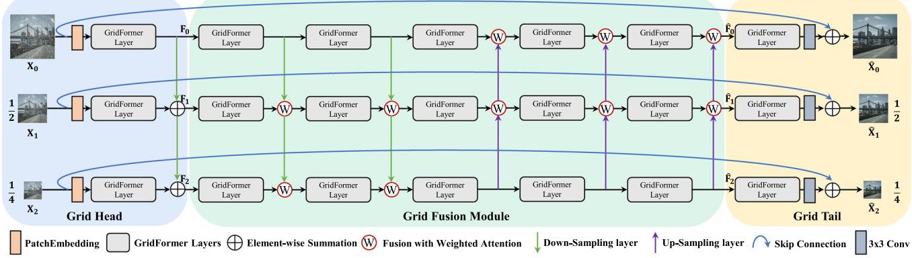
Fig. 2 GridFormer architecture. It consists of a grid head, a grid fusion module, and a grid tail. The pyramid degraded images X0, are first fed into the grid head to extract hierarchical initial features
The initial features are further refined by the grid fusion module to generate features . Finally, the gird tail reconstructs clear images
GridFormer consists of three parts: grid head (GH), grid fusion module (GFM), and grid tail (GT). We present the details of each part in the following.
Grid head. To extract initial multi-resolution features, we use a grid head architecture to process pyramid input images in parallel. Every path in the grid head consists of a feature embedding layer, achieved by convolutions, and a GridFormer layer. As shown in Fig. 2, given a weather-degraded image , the grid head extracts hierarchical features in different channels (i.e., C, 2C, and 4C) from pyramid images (1/2, 1/4 scales for and . In our experiments, we use . The grid head computation can be defined as:
where i is the i-th network path, and is the feature embedding layer. The symbol denotes the down-sampling layer, where we use a convolution with a pixel-unshuffle operation Shi et al. (2016) to halve the features in the spatial dimensions while doubling the channels. GFL is a GridFormer layer that is mainly built from residual dense transformer blocks.
Grid fusion module. To fully integrate the hierarchical features of different rows and columns in the network, we propose a grid fusion module between the grid head and the grid tail. The structure of the proposed grid fusion module is organized into a 2D grid pattern. As illustrated in Fig. 2, the fusion module is designed in a grid-like structure of three rows and five columns. In particular, each row contains five consecutive GridFormer layers that keep the feature dimension constant. In the column axis, according to the position in the grid, we resort to the down-sampling layers or upsampling layers to change the size of the feature maps for feature fusion. Figure 3a shows a representative grid unit in the fusion module. The GridFormer layer is a dense structure consisting of three residual dense transformer layers (RDTL) and a convolution, which will be discussed in the next subsection. The down-sampling and up-sampling layers are symmetrical and use a convolution with pixel-shuffle or pixel-unshuffle operation Shi et al. (2016) to change the feature dimensions. In addition, considering that the features of different scales may not be equally important, we use a simple weighted attention fusion strategy to achieve feature fusion from the different row and column dimensions. Inspired by Zheng et al. (2022), Wang et al. (2023), we first generate two trainable weights for different features, where each parameter is an n-dimensional vector (n is the channels of feature). We add these weighted features to derive the fusion features. Grid units in the grid fusion module provide different information flows for feature fusion shown in Fig. 3b, which guides the network to produce better-recovered results in combination with different complementary information.
Grid tail. To further improve the quality of the recovered images, we design a grid tail module to predict multi-scale outputs. The structure of the grid tail is symmetrical to that of the grid head. Specifically, each path is composed of a GridFormer layer, a convolution, and a long skip connection for image reconstruction. The skip connection is used to transmit input information directly to the grid tail module, which maintains the color and detail of the original image. The complete process is formulated as:
where is the final result of GridFormer on the i-th path, is a convolution, and is the output feature of the grid fusion module. To optimize the network parameters, we train GridFormer using a combination of two losses, multi-scale Charbonnier loss Charbonnier et al. (1994) and perceptual loss, where the weight of perceptual loss Johnson et al. (2016) is set to 0.1. Next, we detail the core component residual dense transformer block that is used to build the elemental layer of GridFormer.
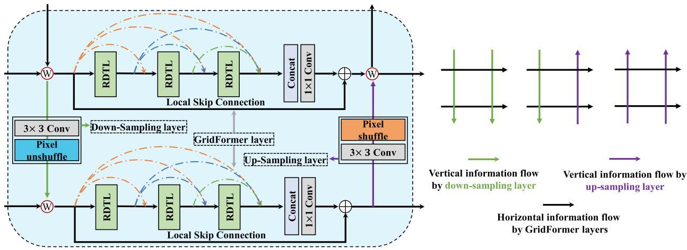
(b) Information flow in the grid units of GridFormer
Fig. 3 Grid unit structure and information flow. (a) The structure of a single grid unit is comprised of four parts: the down-sampling layer, the GridFormer layer, the up-sampling layer, and attention fusion oper-
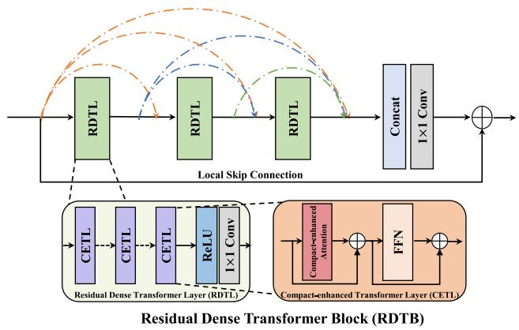
Fig. 4 The structure of the proposed Residual Dense Transformer Block (RDTB). It includes three residual dense transformer layers, a 1 1 convolution for local feature fusion, and a local skip connection for local residual learning. The residual dense transformer layer is mainly built by the proposed compact-enhance transformer layer, which contains the compact-enhanced self-attention and FFN
ations. RDTL refers to the proposed residual dense transformer layer. (b) Information flow of grid units in the fusion module
3.2 Residual Dense Transformer Block
Previous works Huang et al. (2017), Zhang et al. (2018), Liu et al. (2019), Zhang et al. (2021), Zheng et al. (2022) have shown that using dense connections has many advantages, mitigating the vanishing gradient problem, encouraging feature reuse and enhancing information propagation. Accordingly, we propose to design the transformer with dense connections to build the basic GridFormer layers. Specifically, we propose residual dense transformer blocks (RDTB) to compose GridFormer using different settings.
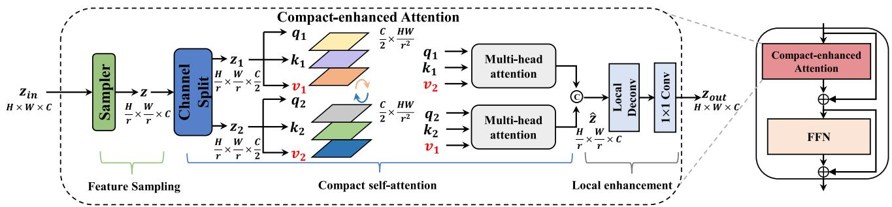
Fig. 5 Right: the schematic illustration of the proposed Compactenhanced Transformer Layer consisting of a compact-enhanced attention and a Feed-Forward Network (FFN). Left: the compact-enhanced attention layer, which contains three steps, feature sampling, compact
self-attention, and local enhancement. H, W, and C denote the height, width, and numbers of feature channels, respectively. r is the feature sampling rate. © and refer to concatenate and element-wise summation operations respectively
As illustrated in Fig. 4, RDTB contains densely connected transformer layers, local feature fusion, and local residual learning. When implementing the dense connection, we mainly incorporate three layers of residual dense transformer layers (RDTL), with the growth rate set at 16. This implies that each individual RDTL generates 16 new feature maps. These newly generated feature maps are subsequently concatenated with the feature maps received from the preceding layer. Within each RDTL, we use several compact-enhanced transformer layers (CETL) with a ReLU Glorot et al. (2011) activation function to extract features, and adopt a convolution to ensure the same number of channels for input and output features. For local feature fusion and local residual learning, we introduce a 1 1 convolution and a local skip connection in RDTB to control the final output.
The direct application of transformers Vaswani et al. (2017), Dosovitskiy et al. (2021) to our grid network will lead to high computational overhead, we thus develop a cost-effective compact-enhanced attention, with the stages of sampler and compact self-attention for improving the efficiency, as well as a local enhancement stage for enhancing the local information in the transformer. Figure 5 illustrates the detailed structure of the proposed compact-enhanced attention.
Feature sampling. We first design a sampler to produce down-sampled input tokens for the subsequent self-attention computation. The sampler is built by an average pooling layer with stride r. The sampler layer not only increases the receptive field to observe more information, but also enhances the invariance on the input token. In addition, the produced lower-resolution features can reduce the computation of subsequent layers. The feature sampling step is formulated as:
where represents the input token. is the output token. Avg indicates the average pooling operation with stride r. In the experiments, we empirically set r as 4, 2, and 2 in three rows of GridFormer layers, respectively (see Sect. 4.4).
Compact self-attention. Given a feature of dimensions , recent low-level transformer-based methods Valanarasu et al. (2022), Lee et al. (2022), Wang et al. (2022) aim to explore the long-range dependence between key and query to calculate the attention map , which leads to high complexity and fails to model the global information from the channel dimension. Thus, for more efficient computation in self-attention, we resort to a different strategy. Specifically, as illustrated in Fig. 5, for an output feature from the sampler, we first implement the split operation by dividing it along the channel dimension to produce and . We then apply a convolution layer with reshape operation on and z2, which projects and z2 into Queries , Keys (k , k and Values , respectively. Inspired by existing methods Petit et al. (2021), Susladkar et al. (2023), Gu et al. (2023), Zhang et al. (2024), we exchange the values produced by them to perform multi-head self-attention, which can improve the interaction between and . Compared with the method of exchanging queries for feature interaction in cross-attention Petit et al. (2021), Zhang et al. (2024), our approach exchanges the values for interaction and feature fusion, finding it beneficial for better restoration performance (see Sect. 4.4). Finally, we obtain the result Zˆ by concatenating the output of the two multi-head self-attention and changing their dimensions. The proposed compact selfattention mechanism can be formulated as:
where indicates the concatenation operation. The major computational overhead in transformers mainly arises from the self-attention (SA) layer. In contrast to recent transformerbased methods that employ spatial modeling for SA, the complexity of the key-query dot-product interaction grows quadratically with the spatial resolution of input, i.e., . Our proposed compact self-attention addresses this by performing SA across channels instead of the spatial dimension, resulting in cross-covariance computation across channels to produce an attention map that implicitly encodes the global context. Consequently, our compact self-attention generates an attention map of size , instead of the huge regular attention map of size . Thus, our compact selfattention successfully reduces complexity.
Local enhancement. As shown in Fig. 5, we add a local feature enhancement stage in the tail of compact selfattention. This stage consists of a deconvolution operation, sometimes referred to as a “transposed convolution," with a deconvolution for local feature propagation and a convolution for local fusion:
where is the final output. and Deconv are convolution and deconvolution layers respectively.
3.3 Loss Function
Inspired by existing works Yin et al. (2023), Valanarasu et al. (2022), Ye et al. (2022), Jiang et al. (2020), Li et al. (2022), Yu et al. (2022), Ali et al. (2023), Hsu and Chang (2023), Qiao et al. (2023), we use a loss function combining the Charbonnier loss Charbonnier et al. (1994) and the perceptual loss Wang et al. (2018) to train our GridFormer. We regard the Charbonnier loss as a pixel-wise loss, which is used between the recovered images and the ground truth images at each scale, and the perceptual loss is used to help our model produce visually pleasing results. The Charbonnier loss is defined as:
where and refer to the restored image and groundtruth image respectively, and k represents the index of the image scale level in our GridFormer. The constant ε is empirically set to . For the perceptual loss, following previous work Wang et al. (2018), we adopt a pre-trained VGG19 Simonyan and Zisserman (2014) to extract the perceptual features from the Conv5_4 layer of VGG19, and then use the loss function to compute the difference between the perceptual features of the restored images and their corresponding ground truths. This effective perceptual loss focuses on capturing high-level semantic information, resulting in sharper edges and visually appealing outcomes, all while ensuring computational efficiency Wang et al. (2018). Specifically, the perceptual loss is as follows:
where C, H, and W denote the dimensions of the feature map obtained from the Conv5_4 layer of the pretrained VGGNet
The final loss function L to train our proposed GridFormer is shown as follows:
where denotes the Charbonnier loss, is the perceptual loss. α is a hyper-parameter that is used to balance these two losses. In our experiments, it is empirically set to 0.1.
3.4 Differences from Existing Methods
While HRNet Wang et al. (2020), HRFormer Yuan et al. (2021), and RevCol Cai et al. (2022) utilize a grid-like structure, they diverge from our GridFormer. First, GridFormer captures multi-scale features directly from the pixel level, in contrast to HRNet and HRFormer which perform multiscale feature extraction at the feature layer level, and RevCol, which does not incorporate a multi-scale mechanism. Second, GridFormer integrates a new self-attention mechanism to enhance the fusion of multi-scale features more effectively. This approach sets it apart from HRNet, HRFormer, and RevCol, which do not employ compact self-attention in their feature fusion processes. Third, our network is intricately designed for image restoration under adverse weather conditions, striving to produce images of superior quality. Unlike HRNet, HRFormer, and RevCol, which are not specifically engineered for this challenge, our network architecture is uniquely suited to tackle the complexities inherent in this task.
4 Experiments and Analysis
We evaluate our GridFormer for several image restoration tasks in severe weather conditions, including (1) image dehazing, (2) image desnowing, (3) raindrop removal, (4) image deraining and dehazing, and (5) multi-weather restoration. Specifically, in this section, we first introduce datasets, the implementation details of our GridFormer, and the comparison methods. Then, we show the restoration results of our GridFormer and the comparison with the state-of-the-art methods. Finally, we conduct extensive ablation studies to verify the effectiveness of modules in our GridFormer.
4.1 Experimental Setup
We evaluate GridFormer on several image restoration tasks under severe weather conditions.
Datasets. For image dehazing, the first setting uses ITS Li et al. (2018) to train the model and test it on indoor SOTS Li et al. (2018). Another setting is training and testing on Haze4K Liu et al. (2021) covering both indoor and outdoor scenes. Desnowing is evaluated on Snow100K Liu et al. (2018). RainDrop Qian et al. (2018) is used for raindrop removal, and Outdoor-Rain Li et al. (2019) is used for image deraining and dehazing. For multi-weather restoration, we train the model on a combination of images degraded in adverse weather conditions similar to Özdenizci and Legenstein (2023). Table 1 lists the datasets used for the different tasks. In the following, we introduce the dataset and experimental details for specific tasks for image restoration in adverse weather conditions.
Image dehazing. Following Liu et al. (2019), Qin et al. (2020), Song et al. (2022), Tu et al. (2022), we conduct our experiments on RESIDE Li et al. (2018) and Haze4K Liu et al. (2021) datasets. Specifically, for the RESIDE dataset, we adopt Indoor Training Set (ITS) to train the model and test the model on the indoor set of the SOTS dataset. ITS contains 13, 990 indoor pair images and the indoor set of the SOTS dataset includes 500 indoor pair images. For the Haze4K dataset, we follow the previous work Ye et al. (2021). The Haze4K dataset contains 3, 000 haze and haze-free image pairs for training and 1, 000 for testing. The Haze4K dataset is more challenging, which considers both indoor and outdoor scenes.
Table 1 Dataset summary on five tasks of image restoration in adverse weather conditions
| Task | Dataset | #Train | #Test |
| Image Dehazing | ITS Li et al. (2018) | 13,990 | 0 |
| SOTS-Indoor Li et al. (2018) | 0 | 500 | |
| Image Desnowing | Haze4K Liu et al. (2021) | 3,000 | 1,000 |
| Snow100K Liu et al. (2018) | 50,000 | 0 | |
| Snow100K-S Liu et al. (2018) | 0 | 16,611 | |
| Snow100K-L Liu et al. (2018) | 0 | 16.801 | |
| Raindrop Removal | RainDrop Qian et al. (2018) | 861 | 0 |
| RainDrop-Test Qian et al. (2018) | 0 | 51 | |
| Image Deraining & Image Dehazing | Outdoor-Rain Li et al. (2019) | 9,000 | 0 |
| Outdoor-Rain-Test Li et al. (2019) | 0 | 750 | |
| Multi-weather Restoration | All-weather Li et al. (2022) | 18,069 | 0 |
| Snow100K-S Liu et al. (2018) | 0 | 16,611 | |
| Snow100K-L Liu et al. (2018) | 0 | 16.801 | |
| RainDrop-Test Qian et al. (2018) | 0 | 51 | |
| Outdoor-Rain-Test Li et al. (2019) | 0 | 750 |
Image desnowing. For this task, we use the popular Snow100K dataset Liu et al. (2018) for training and evaluating the proposed method. Snow100K contains 50, 000 training and 50, 000 testing images. The testing set has three sub-sets Snow100K-S/M/L, which refers to different snowflake sizes (light/mid/heavy). The Snow100K-S, Snow100K-M, and Snow100K-L have 16611, 16588, and 16801 image pairs, respectively. In our experiment, we keep the same setup of Özdenizci and Legenstein (2023). Specifically, we use the training set to train our model and evaluate the proposed method on Snow100K-S and Snow100K-L.
Raindrop removal. Consistent with previous works Qian et al. (2018), Li et al. (2022), Valanarasu et al. (2022), Özdenizci and Legenstein (2023), we adopt a representative RainDrop dataset Qian et al. (2018) for raindrop removal. The RainDrop dataset includes 861 synthetic raindrop training images and 58 images for testing.
Image deraining and dehazing. For this task, we train our GridFormer with Outdoor-Rain dataset Li et al. (2019), which considers dense synthetic rain streaks and provides realistic scene views. Therefore, this dataset is designed to solve the problem of image deraining and dehazing. It consists of 9, 000 images for training and 750 for testing.
Multi-weather restoration. Following the previous works L et al. (2022), Valanarasu et al. (2022), Özdenizci and Legenstein (2023), we use a mixed dataset called All-weather, in which the training set contains 18, 069 images sampled from Snow100K Liu et al. (2018), Raindrop Qian et al. (2018), and Outdoor-Rain Li et al. (2019). We use the Snow100k-S/L test sets to evaluate the model’s performance for the image desnowing task. In addition, we adopt the testing sets of the RainDrop dataset and Outdoor-Rain dataset to eval-
uate the model’s performance for the raindrop removal task and image deraining & dehazing task, respectively.
Implementation details. We implemented GridFormer in PyTorch, using the AdamW optimizer Loshchilov and Hutter (2019) with . The learning rate is set to and decreased to using the cosine annealing decay strategy Loshchilov and Hutter (2016). For each task, we train the model with different iterations and patch sizes. At training time we use random horizontal and vertical flips for data augmentation. Following the setup in Xiao et al. (2022), Valanarasu et al. (2022), Tu et al. (2022), we evaluate the performance by PSNR and SSIM calculated in RGB space for image dehazing, and on the Y channel for other tasks.
Comparison methods. The comparison methods for the image dehazing task are traditional method DCP He et al. (2010), CNN-based methods DehazeNet Cai et al. (2016), MSCNN Ren et al. (2016), AOD-Net Li et al. (2017), GFN Ren et al. (2016), GCANet Chen et al. (2019), GridDehazeNet Liu et al. (2019), MSBDN Dong et al. (2020), PFDN Dong and Pan (2020), FFA-Net Qin et al. (2020), and AECR-Net Wu et al. (2021), and recent transformer-based methods DehazeF-B Song et al. (2022), and MAXIM-2 S Tu et al. (2022). For the task of image desnowing, the comparison methods are SPANet Wang et al. (2019), JSTASR Chen et al. (2020), RESCAN Li et al. (2018), DesnowNet Liu et al. (2018), DDMSNet Zhang et al. (2021), Özdenizci and Legenstein (2023), and Özdenizci and Legenstein (2023). As for the raindrop removal task, the comparison methods are pix2pix Isola et al. (2017), DuRN Liu et al. (2019), RaindropAttn Quan et al. (2019), AttentiveGAN Qian et al. (2018), IDT Xiao et al. (2022), RainDropDiff Özdenizci and Legenstein (2023), and Özdenizci and Legenstein (2023). The comparison methods for the image deraining and dehazing task are CycleGAN Zhu et al. (2017), pix2pix Isola et al. (2017), HRGAN Li et al. (2019), PCNet Jiang et al. (2021), MPRNet Zamir et al. (2021), RainHazeDiff Özdenizci and Legenstein (2023), and RainHazeDiff128 Özdenizci and Legenstein (2023). Finally, the comparison methods for the multiweather restoration task are All-in-One Li et al. (2020), TransWeather Valanarasu et al. (2022), Restormer Zamir et al. (2022), WeatherDiff Özdenizci and Legenstein (2023), and WeatherDiff Özdenizci and Legenstein (2023).
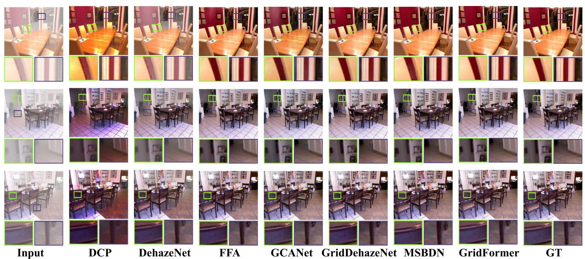
Fig. 6 Dehazing comparison on SOTS-indoor. From left to right are the input images, results of DCP He et al. (2010), DehazeNet Cai et al. (2016), FFA-Net Qin et al. (2020), GCANet Chen et al. (2019), GridDehazeNet Liu et al. (2019), MSBDN Dong et al. (2020), our GridFormer,
and ground truth images, respectively. The images restored by Grid-Former are more clear and closer to the ground truth. Zoom in for details
4.2 Experimental Results
Dehazing results. We perform image dehazing on different datasets to evaluate the performance of GridFormer. We compare the performance of GridFormer with various methods, including traditional prior-based methods, CNN-based methods, and recent transformer-based methods. Table 2 shows the quantitative results in terms of PSNR and SSIM. It shows that GridFormer achieves the best performance on the indoor subset of SOTS regarding all metrics. In particular, GridFormer obtains a significant gain of 4.23 dB in PSNR compared to the second-best method MAXIM-2 S Tu et al. (2022).
We further compare the performance on the more challenging Haze4K dataset, which includes more realistic images from both indoor and outdoor scenarios. GridFormer obtains the best performance in terms of all metrics on this dataset as well. Figure 6 provides a visual comparison for the SOTS indoor dataset. The recovered images by GridFormer contain finer details and are closer to the ground truth.
Desnowing results. We evaluate the desnowing performance on the public Snow100K dataset Liu et al. (2018). The test set is divided into three subsets according to the particle size: Snow100K-S, Snow100K-M, and Snow100K-L. We select Snow100K-S and Snow100K-L for testing. Table 3 shows the quantitative results. On the Snow100K-S subset, GridFormer outperforms the diffusion-based method SnowDiff64 Özdenizci and Legenstein (2023) by 2.3 dB and by 0.0072 in terms of PSNR and SSIM. As for the most difficult Snow100K-L subset, GridFormer still gains an improvement of 2.66 dB and 0.0195 in terms of PSNR and SSIM compared to the second-best method SnowDiff . Figure 7 and Fig. 8 provide the visual comparisons, showing that GridFormer is effective in removing image corruption due to snow while producing perceptually pleasing results.
RainDrop removal results. In Table 4 we present the quantitative results for raindrop removal on the RainDrop dataset. For an extensive comparison, we compare Grid-Former with seven different methods: pix2pix Isola et al. (2017), DuRN Liu et al. (2019), RaindropAttn Quan et al. (2019), AttentiveGAN Qian et al. (2018), IDT Xiao et al. (2022), RainDropDiff Özdenizci and Legenstein (2023), and RainDropDiff Özdenizci and Legenstein (2023). The results show that GridFormer is competitive. Specifically, GridFormer achieves the best performance in terms of PSNR and achieves almost the same level of performance as the state-of-the-art method RainDropDiff Özdenizci and Legenstein (2023) in terms of SSIM with a difference of 0.0022. A visual comparison of the results on RainDrop is provided in Fig. 9. It shows that our method can remove raindrops successfully and generate realistic images.
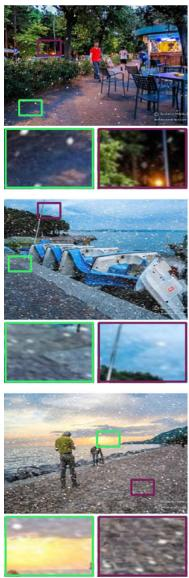
Input
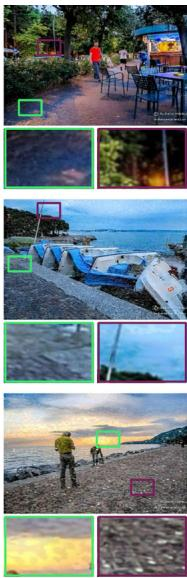
DsnowNet
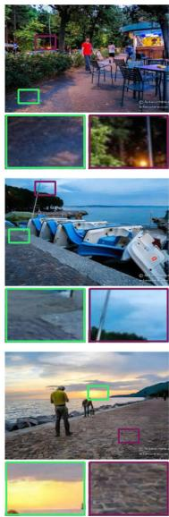
DDMSNet
SnowDiff64
Fig. 7 Desnowing comparison on Snow100K-S test set. From left to right are the input images, results of DesnowNet Liu et al. (2018), DDMSNet Zhang et al. (2021), SnowDiff Özdenizci and Legenstein
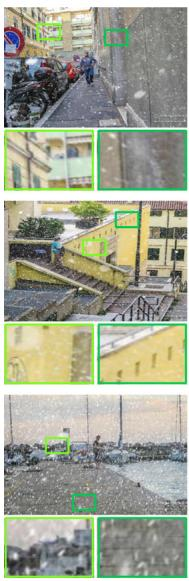
Input
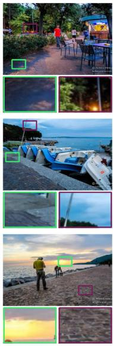
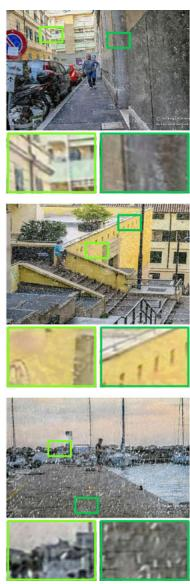
DsnowNet
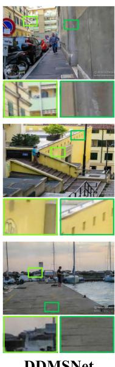
DDMSNet
SnowDiff64
Fig. 8 Desnowing comparison on Snow100K-L test set. From left to right are the input images, results of DesnowNet Liu et al. (2018), DDMSNet Zhang et al. (2021), SnowDiff Özdenizci and Legenstein
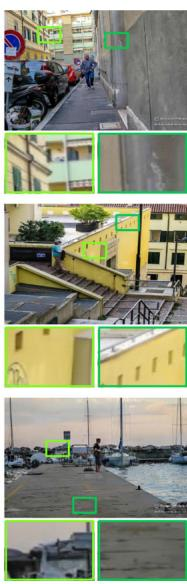
Deraining and dehazing results. For the image deraining and dehazing task, we conduct experiments on the Outdoor-
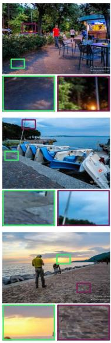
SnowDiff128
GridFormer
GT
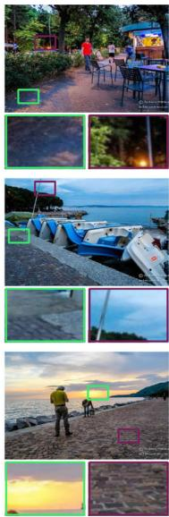
(2023), SnowDiff128 Özdenizci and Legenstein (2023), our GridFormer, and ground truth images, respectively. Zoom in for details
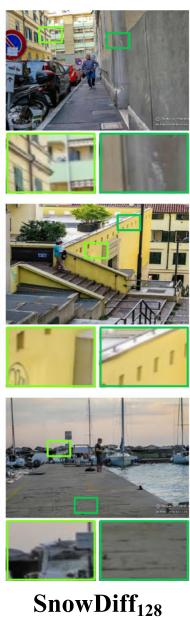
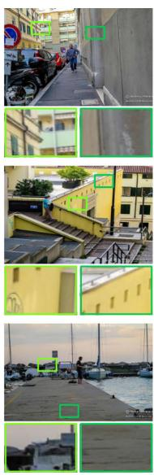
GridFormer
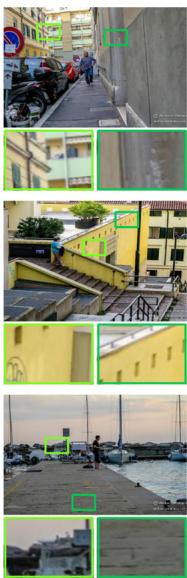
GT
(2023), SnowDiff128 Özdenizci and Legenstein (2023), our GridFormer, and ground truth images, respectively. Zoom in for details
Rain dataset Li et al. (2019). This dataset has 9, 000 pairs of images for training, and 750 pairs for testing, where degraded images are synthesized considering the rain and haze scenes simultaneously. The comparisons between GridFormer and other state-of-the-art methods are reported in Table 5. Grid-Former outperforms other competitors in terms of PSNR, and ranks second place regarding SSIM. More specifically,
Table 2 Dehazing results on SOTS-indoor and Haze4K. Bold and underlined fonts denote the best and second-best results, respectively
| Type | Method | SOTS-Indoor Li et al. (2018) | Haze4K Liu et al. (2021) | ||
| PSNR↑ | SSIM↑ | PSNR↑ | SSIM↑ | ||
| Dehazing Task | DCP He et al. (2010) | 16.62 | 0.818 | 14.01 | 0.760 |
| DehazeNet Cai et al. (2016) | 19.82 | 0.821 | 19.12 | 0.840 | |
| MSCNN Ren et al. (2016) | 19.84 | 0.833 | 14.01 | 0.510 | |
| AOD-Net Li et al. (2017) | 32.33 | 0.950 | 27.17 | 0.898 | |
| GFN Ren et al. (2016) | 22.30 | 0.880 | |||
| GCANet Chen et al. (2019) | 30.23 | 0.980 | |||
| GridDehazeNet Liu et al. (2019) | 32.16 | 0.984 | 23.29 | 0.930 | |
| MSBDN Dong et al. (2020) | 33.67 | 0.985 | 22.99 | 0.850 | |
| PFDN Dong and Pan (2020) | 32.68 | 0.976 | |||
| FFA-Net Qin et al. (2020) | 36.39 | 0.989 | 26.96 | 0.950 | |
| AECR-Net Wu et al. (2021) | 37.17 | 0.990 | |||
| DehazeF-B Song et al. (2022) | 37.84 | 0.994 | - | ||
| MAXIM-2S Tu et al. (2022) | 38.11 | 0.991 | |||
| GridFormer | 42.34 | 0.994 | 33.27 | 0.986 | |
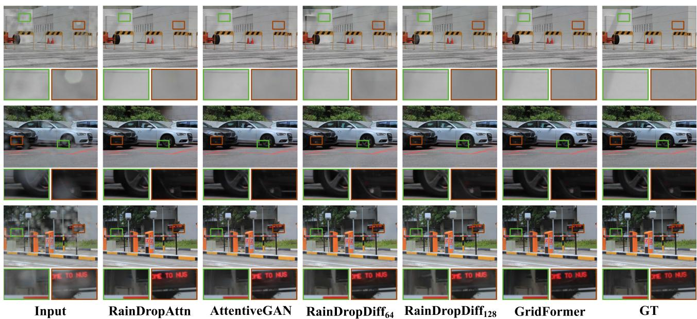
Fig. 9 Raindrop removal results on RainDrop test set. From left to right are the input images, results of RaindropAttn Quan et al. (2019), AttentiveGAN Qian et al. (2018), RainDropDiff Özdenizci and Leg-
enstein (2023), RainDropDiff Özdenizci and Legenstein (2023), our GridFormer, and ground truth images, respectively. Zoom in for details
GridFormer achieves 0.11 dB and 0.46 dB improvement in terms ofPSNR when compared to RainHazeDiff Özdenizci and Legenstein (2023) and MPRNet Zamir et al. (2021). Figure 10 shows the visual comparison, indicating that Grid-Former can handle haze and rainfall scenarios well at the same time, and generate vivid results.
Multi-weather restoration results. We further explore the potential of GridFormer for multi-weather restoration. Specifically, we first train our model on the mixed dataset sampled from Snow100K Liu et al. (2018), Raindrop Qian et al. (2018), and Outdoor-Rain Li et al. (2019) datasets. Then, we evaluate our model on the Snow100k-S/L test sets, the RainDrop test dataset, and the Outdoor-Rain test dataset. We choose four representative multi-weather restoration methods for comparison: All-in-One network Li et al. (2020) is a CNN-based method, TransWeather is based on transformers, WeatherDiff64 and are diffusion models. Table 3, 4, and 5 summarize the quantitative results.
Table3DesnowingresultsonSnow100K-S/L.Boldandunderlinedfontsdenotebestandsecond-bestresults,respectively
| Type | Method | Snow100K-S Liu et al. (2018) PSNR↑ SSIM↑ | Snow100K-L Liu et al. (2018) PSNR↑ SSIM↑ | ||
| Desnowing Task | SPANet Wang et al. (2019) | 29.92 | 0.8260 | 23.70 | 0.7930 |
| JSTASR Chen et al. (2020) | 31.40 | 0.9012 | 25.32 | 0.8076 | |
| RESCAN Li et al. (2018) | 31.51 | 0.9032 | 26.08 | 0.8108 | |
| DesnowNet Liu et al. (2018) | 32.33 | 0.9500 | 27.17 | 0.8983 | |
| DDMSNet Zhang et al. (2021) | 34.34 | 0.9445 | 28.85 | 0.8772 | |
| SnowDiff64Özdenizci and Legenstein (2023) | 36.59 | 0.9626 | 30.43 | 0.9145 | |
| SnowDiff128 Özdenizci and Legenstein (2023) | 36.09 | 0.9545 | 30.28 | 0.9000 | |
| GridFormer | 38.89 | 0.9698 | 33.09 | 0.9340 | |
| Multi-weather Restoration | All-in-One Li et al. (2020) | 28.33 | 0.8820 | ||
| TransWeather Valanarasu et al. (2022) | 32.51 | 0.9341 | 29.31 | 0.8879 | |
| Restormer Zamir et al. (2022) | 36.08 | 0.9591 | 30.28 | 0.9124 | |
| WeatherDiff64 Özdenizci and Legenstein (2023) | 35.83 | 0.9566 | 30.09 | 0.9041 | |
| WeatherDiff128Özdenizci and Legenstein (2023) | 35.02 | 0.9516 | 29.58 | 0.8941 | |
| GridFormer-S | 36.68 | 0.9602 | 30.78 | 0.9167 | |
| GridFormer | 37.46 | 0.9640 | 31.71 | 0.9231 | |
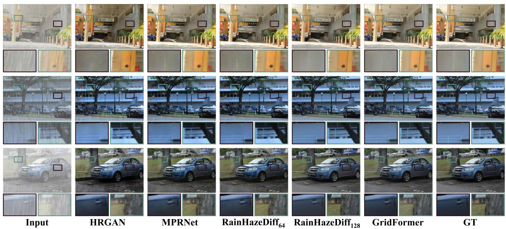
Fig. 10 Visual results of deraining & dehazing on Outdoor-Rain test set. From left to right are the input images, results of HRGAN Li et al. (2019), MPRNet Zamir et al. (2021), RainHazeDiff64 Özdenizci and
Legenstein (2023), RainHazeDiff Özdenizci and Legenstein (2023), our GridFormer, and ground truth images, respectively. Zoom in for details
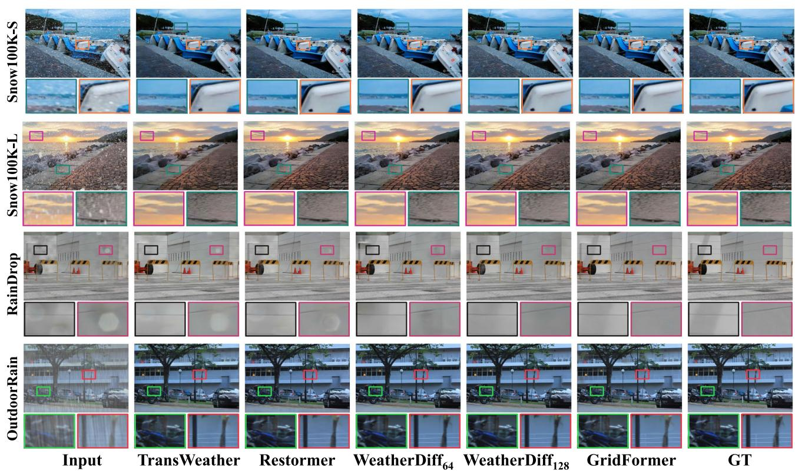
Fig. 11 Multi-weather Restoration comparison on Snow100K-S, Snow100K-L, RainDrop, Outdoor-Rain datasets. From left to right are the input images, results of TransWeather Valanarasu et al. (2022),
Restormer Zamir et al. (2022), WeatherDiff Özdenizci and Legenstein (2023), WeatherDiff128 Özdenizci and Legenstein (2023), our Grid-Former, and ground truth images, respectively. Zoom in for details
Table 4 RainDrop removal results on RainDrop test set. Bold and underlined fonts denote best and second-best results, respectively
| Type | Method | RainDrop Qian et al. (2018) | |
| PSNR↑ | SSIM↑ | ||
| RainDrop Removal | pix2pix Isola et al. (2017) | 28.02 | 0.8547 |
| DuRN Liu et al. (2019) | 31.24 | 0.9259 | |
| RaindropAttn Quan et al. (2019) | 31.44 | 0.9263 | |
| AttentiveGAN Qian et al. (2018) | 31.59 | 0.9170 | |
| IDT Xiao et al. (2022) | 31.87 | 0.9313 | |
| Özdenizci and Legenstein (2023) | 32.29 | 0.9422 | |
| Özdenizci and Legenstein (2023) | 32.43 | 0.9334 | |
| Multi-weather Restoration | GridFormer All-in-One Li et al. (2020) | 32.92 | 0.9400 0.9268 |
| Trans Weather Valanarasu et al. (2022) | 31.12 30.17 | 0.9157 | |
| Restormer Zamir et al. (2022) | 30.91 | ||
| Özdenizci and Legenstein (2023) | 29.64 | 0.9282 0.9312 | |
| Özdenizci and Legenstein (2023) | 29.66 | 0.9225 | |
| GridFormer-S | 31.02 | 0.9301 | |
| GridFormer | 32.39 | 0.9362 | |
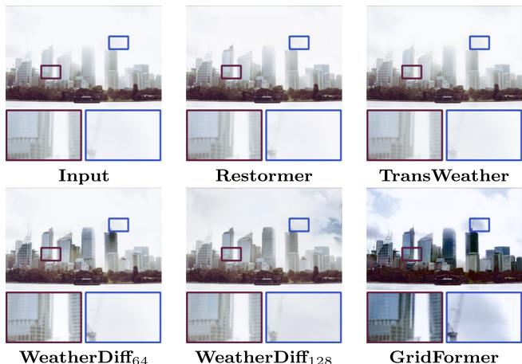
Fig. 12 Exemplar results on the real-world image
GridFormer achieves the best performance in all weather conditions. We present visual comparisons in Fig. 11. Images produced by GridFormer exhibit fewer artifacts and are closer to ground truth compared to other methods. In an additional experiment, we set in the grid head to construct a tiny variant of the network called GridFormer-S for comparison. The results show that our methods achieve competitive results with less complexity and parameters, see Table 5.
Cross-dataset evaluation. To further verify the models’ performance across different datasets, we conduct a crossdataset evaluation on different SOTA methods. To be specific, the models , TransWeather, Restormer, WeatherDiff , GridFormer-S, and GridFormer) are trained on the All-weather dataset, and then directly applied to the specific deraining datasets Rain100L Yang et al. (2017) and
Table 7 Memory consumption and inference time of different methods evaluated on 512 512 resolution images
| Methods | Platform | Memory (MB) | time (ms) |
| Restormer | PyTorch | 30031.50 | 321.6 |
| PyTorch | 6307.53 | 101232.1 | |
| PyTorch | 7941.03 | 133557.7 | |
| GridFormer-S | PyTorch | 20793.94 | 165.0 |
| GridFormer | PyTorch | 28461.94 | 259.1 |
Test100 Zhang et al. (2019) for testing. Experimental results in Table 6 show that our GridFormer-S and GridFormer outperform other approaches.
Performance in real-world scenarios. To further verify the effectiveness of the proposed method in real-world scenarios, we conduct a qualitative comparison experiment on the real-world hazy image from the Internet. The comparison result is shown in Fig. 12. Compared with current state-ofthe-art methods, our method effectively removes the haze and produces a clear result. The result shows that our method outperforms the current methods in real-world scenarios.
Efficiency comparison. We also analyze the efficiency of our models. Table 7 displays the comparison results of different methods in terms of the memory consumption and inference time for resolution. Specifically, we choose top three SOTA methods (i.e., Restormer, WeatherDiff64, and for comparison. Compared with other SOTA methods, our GridFormer-S exhibits the highest inference time. In addition, GridFormer-S and GridFormer are competitive in terms of memory consumption.
| Table 5 Image deraining & dehazing results on Outdoor-Rain test set. The MACs of each model is measured on 256 × 256 image | ||||
| Type | Method | Outdoor-Rain Li et al. (2019) PSNR↑ | Overhead Param/MACs | |
| SSIM↑ | ||||
| Deraining & Dehazing | CycleGAN Zhu et al. (2017) | 17.62 | 0.6560 | 7.84M/42.38G |
| pix2pix Isola et al. (2017) | 19.09 | 0.7100 | 54.41M/18.15G | |
| HRGAN Li et al. (2019) | 21.56 | 0.8550 | 25.11M/34.93G | |
| PCNet Jiang et al. (2021) | 26.19 | 0.9015 | 627.56K/268.45G | |
| MPRNet Zamir et al. (2021) | 28.03 | 0.9192 | 3.64M/148.55G | |
| RainHazeDiff64 Özdenizci and Legenstein (2023) | 28.38 | 0.9320 | 82.92M/475.16G | |
| RainHazeDiff128Özdenizci and Legenstein (2023) | 26.84 | 0.9152 | 85.56M/263.45G | |
| GridFormer | 28.49 | 0.9213 | 30.12M/251.35G | |
| All-in-One Li et al. (2020) | 24.71 | 0.8980 | 44.00M/12.26G | |
| Multi-weather Restoration | TransWeather Valanarasu et al. (2022) Restormer Zamir et al. (2022) | 28.83 30.21 | 0.9000 | 21.90M/5.64G |
| WeatherDiff64 Özdenizci and Legenstein (2023) | 0.9208 | 26.10M/140.99G | ||
| WeatherDiff128Özdenizci and Legenstein (2023) | 29.64 29.72 | 0.9312 | 82.92M/475.16G | |
| 30.48 | 0.9216 0.9313 | 85.56M/263.45G | ||
| GridFormer-S | 14.83M/133.24G | |||
| GridFormer | 31.87 | 0.9335 | 30.12M/251.35G | |
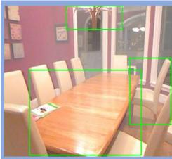
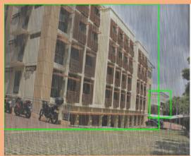
| Büilding | 83% |
| Building | 65% |
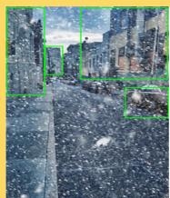
| Building | 64% |
| Animal | 63% |
| Building | 57% |
| Building | 53% |
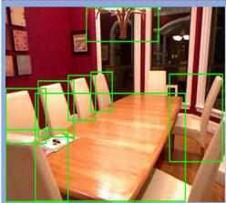
| Table top | 89% |
| Chair | 85% |
| Chair | 74% |
| Chair | 72% |
| Chair | 68% |
| Lighting | 65% |
| Chair | 64% |
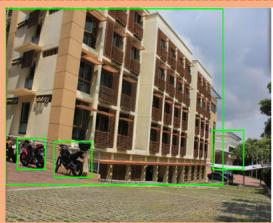
| Building | 83% |
| Motorcycle | 77% |
| Building | 70% |
| Motorcycle | 65% |
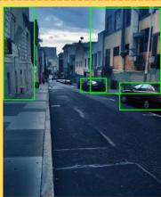
| Car | 93% |
| Car | 81% |
| Building | 72% |
| Building | 60% |
(a) Detection results on the synthetic images
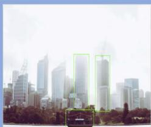
| Building | 62% |
| Building | 61% |
| Boat | 59% |
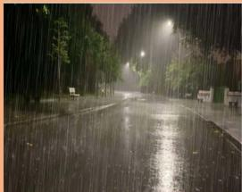
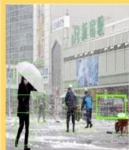
| Umbrella | 94% |
| Person | 91% |
| Person | 91% |
| Person | 90% |
| Person | 89% |
| Pants | 86% |
| Footwear | 63% |
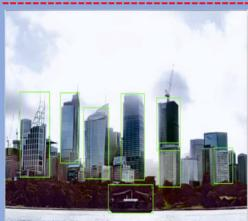
| Building | 79% |
| Building | 73% |
| Building | 70% |
| Boat | 62% |
| Building | 58% |
| Building | 58% |
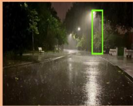
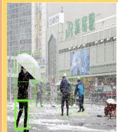
(b) Detection results on the real-world images
| Person | 92% |
| Umbrella | 92% |
| Person | 91% |
| Person | 91% |
| Person | 87% |
| Pants | 86% |
| Car | 59% |
Fig. 13 In each sub-image, the top images are captured in haze, rain, and snow weather conditions. The bottom images are recovered by our GridFormer. We report the detection confidences of these images, which shows that our GridFormer as a pre-processing tool benefits the task of object detection
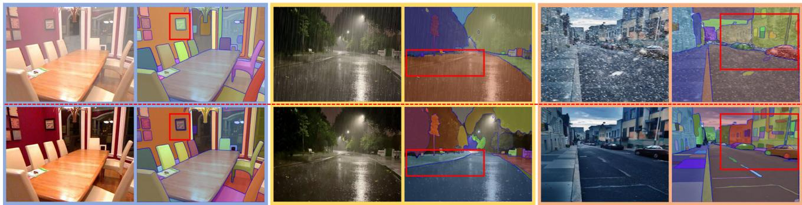
Fig. 14 The top images are captured in haze, rain, and snow weather conditions. The bottom images are recovered by our GridFormer. We show the segmentation results of these images, which demonstrates that our GridFormer as a pre-processing tool benefits the task of image segmentation
Table 6 Cross-dataset evaluation. Models are trained only on the All-weather dataset and directly applied to the Rain100L and Test100 benchmark datasets. Bold and underlined fonts denote the best and second-best results, respectively
| Method | Rain100L Yang et al. (2017) | Test100 Zhang et al. (2019) | ||
| PSNR↑ | SSIM↑ | PSNR↑ | SSIM↑ | |
| TransWeather | 30.33 | 0.9365 | 24.20 | 0.8317 |
| Restormer | 27.08 | 0.8432 | 23.28 | 0.7136 |
| WeatherDiff64 | 27.46 | 0.8534 | 23.13 | 0.7091 |
| WeatherDiff128 | 27.56 | 0.8552 | 23.26 | 0.7255 |
| GridFormer-S | 33.21 | 0.9541 | 27.10 | 0.8713 |
| GridFormer | 34.24 | 0.9649 | 29.26 | 0.8912 |
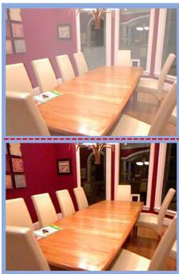
There is a large wooden table with chairs in a room, photo blurring, houzz, purple tint, avoid symmetry, plated arm, reduce duplicate content, left align, clear glass, the photo shows a large, hone finished.
There is a large wooden table with white chairs in a room. plum color scheme, group of seven, bold complementary colours, family dinner, elegant and extremely ornamental, porches.
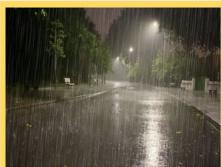
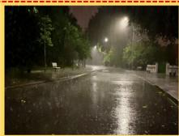
There is a street with a bench and a street light in the rain, subsiding floodwaters, spring season city, thunders, rippling liquid, neighborhood, tranquil.
There is a wet street with benches and benches on the side of it, evening storm. relaxing calm vibes, gentle sparkling forest stream, cinemascope, very detailed super storm, boulevard, summer evening.
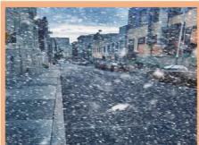
Snowy day in a city with cars and buildings, pavements, no-text, no-logo, game map matte painting, photo blurring photographic print, book title visible, actual photo, real photograph, hyper realistic photograph.
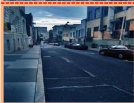
Cars are parked on the side of the road in a city, instagram contest winner, dangerous depressing atmosphere, no greenery, dark ambient album cover, walking to the right, photo taken from far, empty streets.
Fig. 15 In each sub-image, the top images are captured in haze, rain, and snow weather conditions. The bottom images are recovered by our GridFormer. We show the image caption results of these images, which shows that our GridFormer as a pre-processing tool benefits the task of image caption
4.3 Application
Image restoration in adverse weather conditions can enhance the image content, which can be easily incorporated into other high-level vision tasks. As a result, we investigate the potential of GridFormer in improving the performance of object detection, image segmentation, and image caption algorithms when dealing with adverse weather scenes. In the case of object detection, we consider both synthetic and real-world images. Figure 13 shows detection results, where we use Google Vision API for object detection. We observe that haze, rain, and snow greatly reduce the detection accuracy, that is, increased missed detection, higher false detection, and lower detection confidence. In contrast, the detection accuracy and confidence of the images recovered by GridFormer show significant improvement over those of weather-degraded images. Figure 14 showcases the segmentation results, utilizing the state-of-the-art Segment Anything Model Kirillov et al. (2023) for image segmentation. Our restoration results demonstrate an enhancement in segmentation accuracies, indicating that GridFormer effectively facilitates subsequent segmentation performance. Lastly, Fig. 15 presents the image caption results using the BLIP model Li et al. (2022). These results show that the BLIP model can generate detailed captions by utilizing our restoration results, further validating the effectiveness of our GridFormer.
Table 8 Ablation studies on the proposed compact-enhanced selfattention (CESA). FS, CS, and LE refer to feature sampling, channel split, and local enhancement operations in CESA respectively. MACs are measured on 256 256 images
| FS | CS | LE | Param/MACs | RainDrop PSNR/SSIM | SOTS-Indoor PSNR/SSIM |
| X | x | x | 38.08M/322.26G | 29.93/0.8710 | 36.89/0.9631 |
| √ | x | x | 34.91M/237.79G | 30.82/0.9012 | 37.81/0.9831 |
| √ | √ | x | 26.88M/227.65G | 31.98/0.9294 | 40.51/0.9921 |
| √ | √ | √ | 30.12M/251.35G | 32.57/0.9365 | 41.84/0.9932 |
4.4 Ablation Study
We conduct extensive ablation studies to verify the proposed compact-enhanced self-attention, residual dense transformer block, grid structure, and used loss functions. Specifically, we conduct ablation studies on the tasks of raindrop removal and dehazing to analyze the performance of GridFormer. For each model, we train it for iterations using a batch size of 12 on the RainDrop dataset Qian et al. (2018) and the ITS dataset Li et al. (2018) respectively. Subsequently, we assess the performance of each model on the testing sets of the RainDrop dataset and the testing SOTS-Indoor dataset. The detailed results are presented as follows.
A. Compact-enhanced self-attention. We verify the impact of feature sampling, channel split, and local enhance-
Table 9 Ablation studies on the different settings of r in three rows of GridFormer layers, where r indicates the stride of the average pooling operation in feature sampling of the proposed compact-enhanced transformer layer. 4, 2, 2 denotes r is set as 4, 2, and 2 in three rows of GridFormer layers, respectively
Table 10 Ablation studies on the proposed residual dense transformer block (RDTB). DC, LF, and LSC denote dense connection, local fusion with convolution, and local skip connection in RDTB respectively. MACs are measured on 256 256 images
Table 11 Ablation study on different gird configurations. r and c denote the numbers of rows and columns of the model
| Different Settings of r | Param/MACs | RainDrop PSNR/SSIM | SOTS-Indoor PSNR/SSIM |
| [2, 2, 2] | 29.53M/213.01G | 30.93/0.8991 | 33.81/0.9631 |
| [4, 4, 4] | 48.63M/356.57G | 31.62/0.9112 | 40.31/0.9901 |
| [4, 2, 2] | 30.12M/251.35G | 31.98/0.9294 | 40.51/0.9921 |
| DC | LF | LSC | Param/MACs | RainDrop PSNR/SSIM | SOTS-Indoor PSNR/SSIM |
| x | x | x | 27.99M/253.57G | 31.48/0.9187 | 40.32/0.9901 |
| √ | x | x | 32.78M/284.87G | 32.07/0.9284 | 40.45/0.9912 |
| √ | √ | x | 30.12M/251.35G | 32.05/0.9298 | 40.87/0.9926 |
| √ | √ | √ | 30.12M/251.35G | 32.57/0.9365 | 41.84/0.9932 |
| Grid Setting | Overhead | RainDrop | SOTS-Indoor | ||
| r | C | Param (M) | MACs (G) | PSNR/SSIM | PSNR/SSIM |
| 0.81 | 51.24 | 30.07/0.9163 | 38.02/0.9879 | ||
| 1.01 | 64.01 | 30.44/0.9198 | 38.21/0.9880 | ||
| 1.21 | 76.77 | 30.54/0.9199 | 38.61/0.9885 | ||
| 1.41 | 89.54 | 30.62/0.9205 | 38.78/0.9891 | ||
| 2.64 | 80.48 | 31.21/0.9280 | 39.68/0.9900 | ||
| 3.50 | 103.98 | 31.23/0.9281 | 39.73/0.9901 | ||
| 4.51 | 129.52 | 31.37/0.9294 | 40.21/0.9915 | ||
| 5.37 | 153.01 | 31.58/0.9311 | 40.50/0.9918 | ||
| 13.96 | 125.38 | 31.67/0.9339 | 40.79/0.9918 | ||
| 19.09 | 166.01 | 31.73/0.9356 | 41.13/0.9929 | ||
| 24.99 | 210.72 | 31.89/0.9359 | 41.01/0.9926 | ||
| 30.12 | 251.35 | 32.57/0.9365 | 41.84/0.9932 | ||
| 150.86 | 410.09 | 32.05/0.9361 | 40.85/0.9921 | ||
ment operations in compact-enhanced self-attention. Table 8 shows the comparison results. After applying feature sampling (FS) and channel split (CS) operations respectively, the model achieves 0.89 dB and 1.16 dB improvements in the RainDrop dataset (0.92 dB and 2.70 dB improvements in the SOTS-Indoor dataset), while the computational complexity is significantly reduced. Using local enhancement (LE) operations, the performance gains on the RainDrop and SOTS-Indoor datasets are 0.59 dB and 1.33 dB respectively. The ablation study results suggest the effectiveness of these operations. We also conduct an additional ablation study on the RainDrop dataset to verify the effectiveness of exchanging the Values for feature interaction and fusion in our compact-enhanced self-attention. Specifically, we focus on exchanging only the Queries between z and z to investigate its impact on performance. The results of this experiment demonstrate that exchanging the Queries results in a PSNR value of 31.81, which is inferior to the outcome achieved by exchanging the Values (32.57). These ablation results show the effectiveness of the Value exchange in enhancing interaction and feature fusion, thereby contributing to improved restoration performance. Furthermore, in our model, the choice of the step parameter as described in formula 3, indeed impacts the model’s computational complexity and performance. Thus, we evaluate the effect of different settings of r in the GridFormer. Table 9 shows that our model with the 4, 2, 2 setting achieves a better trade-off between computation cost and performance.
B. Residual dense transformer block. To demonstrate the effectiveness of the proposed residual dense transformer block, we conduct ablation studies by considering the following three factors: (1) dense connections (DC), (2) local fusion with 1 1 convolution (LF), and (3) local skip connection (LSC). Specifically, we analyze the different models by progressively adding these components. The results are shown in Table 10. We observe that each component improves the performance, where dense connections contribute the most.
C. Exploring different configurations in the grid structure of GridFormer. To comprehensively understand the impact of GridFormer’s grid structure, we have conducted ablation experiments involving variations in the number of rows and columns. Each row within our GridFormer framework corresponds to a distinct scale, while the columns in the grid fusion module act as conduits that facilitate the exchange of information across diverse scales. This grid structure profoundly influences the information interchange that occurs among the grid units within the Grid Fusion module. In our study, we have systematically altered the number of rows, ranging from 1 to 4, while maintaining columns at values of 3, 4, 5, and 6. The results with different configurations are shown in Table 11. By increasing r and c, the performance is improved, and the overhead gradually becomes complex. The model performance achieves its maximum for r 3 and c 6. Thus, we select these values in our final model.
D. Other GridFormer components. The skip connection from input images and the perceptual loss also contribute to improving the performance. Without the skip connection from the input image, the PSNR value would decrease from 32.57 dB to 31.85 dB on the testing set of the Rain-Drop dataset. Training GridFormer without the perceptual loss results in a PSNR of 32.72 dB on the testing set of the RainDrop dataset.
5 Limitations and Future Work
As a new backbone, GridFormer has achieved better performance than previous methods in image restoration under adverse weather conditions, but it still has space for improvement. For example, using the pre-trained strategy Chen et al. (2021) or the contrastive learning technique Wu et al. (2021) on our GridFormer can further explore its performance potential. In addition, we fuse multi-scale features with simple weighted attention Zheng et al. (2022), Wang et al. (2023). We can improve this fusion by designing special modules using sophisticated attention mechanisms Qin et al. (2020), Song et al. (2022). Finally, GridFormer is evaluated in the image scenery, and we are still exploring whether it can handle the video restoration problem. In the future, it is also an important direction to extend our GridFormer to deal with video restoration in adverse weather conditions.
6 Conclusion
In this paper, we propose GridFormer, a unified Transformer architecture for image restoration in adverse weather conditions. It adopts a grid structure to facilitate information communication across different streams and makes full use ofthe hierarchical features from the input images. In addition, to build the basic layer of GridFormer, we propose a compactenhanced transformer layer and integrate it in a residual dense manner, which encourages feature reuse and enhances feature representation. Comprehensive experiments show that GridFormer significantly surpasses state-of-the-art methods, producing good results on both weather-specific and multiweather restoration tasks.
Acknowledgements This work was supported in part by the National Natural Science Foundation ofChina (Grant No. 62372223, 62372480), in part by the Guangdong Basic and Applied Basic Research Foundation (No. 2023A1515012839), in part by Shenzhen Science and Technology Program (No. JSGG20220831093004008), in part by China Mobile Zijin Innovation Insititute (No. NR2310J7M).
Data Availability Statement The datasets generated during and/or analyzed during the current study are available in the WeatherDiffusion repository, with the link as https://github.com/IGITUGraz/ WeatherDiffusion.
References
Ali, A. M., Benjdira, B., Koubaa, A., El-Shafai, W., Khan, Z., & Boulila, W. (2023). Vision transformers in image restoration: A survey. Sensors, 23(5), 2385.
Ba, Y., Zhang, H., Yang, E., Suzuki, A., Pfahnl, A., Chandrappa, C.C., de Melo, C.M., You, S., Soatto, S. & Wong, A. et al. (2022). Not just streaks: Towards ground truth for single image deraining. In: Proceedings ofEuropean Conference on Computer Vision, pp. 723–740.
Berman, D. & Avidan, S. et al. (2016). Non-local image dehazing. In: Proceedings of IEEE conference on computer vision and pattern recognition, pp. 1674–1682.
Cai, B., Xu, X., Jia, K., Qing, C., & Tao, D. (2016). Dehazenet: An endto-end system for single image haze removal. IEEE Transactions on Image Processing, 25(11), 5187–5198.
Cai, Y., Zhou, Y., Han, Q., Sun, J., Kong, X., Li, J. & Zhang, X. (2022). Reversible column networks. In: Proceedings ofinternational conference on learning representations
Carion, N., Massa, F., Synnaeve, G., Usunier, N., Kirillov, A. & Zagoruyko, S. (2020). End-to-end object detection with transformers. In: Proceedings ofEuropean Conference on Computer Vision, pp. 213–229.
Charbonnier, P., Blanc-Feraud, L., Aubert, G. & Barlaud, M. (1994). Two deterministic half-quadratic regularization algorithms for computed imaging. In: Proceedings of international conference on image processing, pp. 168–172.
Chen, D., He, M., Fan, Q., Liao, J., Zhang, L., Hou, D., Yuan, L. & Hua, G. (2019). Gated context aggregation network for image dehazing and deraining. In: Proceedings of IEEE winter conference on applications ofcomputer vision, pp. 1375–1383.
Chen, H., Wang, Y., Guo, T., Xu, C., Deng, Y., Liu, Z., Ma, S., Xu, C., Xu, C. & Gao, W. (2021). Pre-trained image processing transformer. In: Proceedings of IEEE conference on computer vision and pattern recognition, pp. 12299–12310.
Chen, S., Ye, T., Liu, Y., Chen, E., Shi, J. & Zhou, J. (2022). Snowformer: Scale-aware transformer via context interaction for single image desnowing. arXiv preprint arXiv:2208.09703.
Chen, W. T., Fang, H. Y., Ding, J. J., Tsai, C. C. & Kuo, S. Y. (2020). Jstasr: Joint size and transparency-aware snow removal algorithm based on modified partial convolution and veiling effect removal. In: Proceedings of European conference on computer vision, pp. 754–770.
Chen, Y. L. & Hsu, C. T. (2013). A generalized low-rank appearance model for spatio-temporally correlated rain streaks. In: Proceedings of IEEE international conference on computer vision, pp. 1968–1975.
Cho, S. J., Ji, S. W., Hong, J. P., Jung, S. W. & Ko, S. J. (2021). Rethinking coarse-to-fine approach in single image deblurring. In: Proceedings ofthe IEEE international conference on computer vision, pp. 4641–4650.
Dong, H., Pan, J., Xiang, L., Hu, Z., Zhang, X., Wang, F. & Yang, M. H. (2020). Multi-scale boosted dehazing network with dense feature fusion. In: Proceedings of IEEE conference on computer vision and pattern recognition, pp. 2157–2167.
Dong, J. & Pan, J. (2020). Physics-based feature dehazing networks. In: Proceedings of European conference on computer vision, pp. 188–204.
Dosovitskiy, A., Beyer, L., Kolesnikov, A., Weissenborn, D., Zhai, X., Unterthiner, T., Dehghani, M., Minderer, M., Heigold, G. & Gelly, S. et al. (2021). An image is worth 16x16 words: Transformers for image recognition at scale. In: Proceedings of international conference on learning representations.
Du, Y., Xu, J., Zhen, X., Cheng, M. M., & Shao, L. (2020). Conditional variational image deraining. IEEE Transactions on Image Processing, 29, 6288–6301.
Fu, X., Huang, J., Ding, X., Liao, Y., & Paisley, J. (2017). Clearing the skies: A deep network architecture for single-image rain removal. IEEE Transactions on Image Processing, 26(6), 2944–2956.
Garg, K. & Nayar, S. K. (2005). When does a camera see rain? In: Proceedings of IEEE international conference on computer vision, pp. 1067–1074.
Glorot, X., Bordes, A. & Bengio, Y. (2011). Deep sparse rectifier neural networks. In: Proceedings ofinternational conference on artificial intelligence and statistics, pp. 315–323.
Gu, X., Wang, L., Deng, Z., Cao, Y., Huang, X. & Zhu, Y. m. (2023). Adafuse: Adaptive medical image fusion based on spatialfrequential cross attention. arXiv preprint arXiv:2310.05462.
He, K., Sun, J., & Tang, X. (2010). Single image haze removal using dark channel prior. IEEE Transactions on Pattern Analysis and Machine Intelligence, 33(12), 2341–2353.
Hsu, W. Y. & Chang, W. C. (2023). Wavelet approximation-aware residual network for single image deraining. IEEE transactions on pattern analysis and machine intelligence.
Huang, G., Liu, Z., Van Der Maaten, L. & Weinberger, K. Q. (2017). Densely connected convolutional networks. In: Proceedings of IEEE conference on computer vision and pattern recognition, pp. 4700–4708.
Isola, P., Zhu, J.Y., Zhou, T. & Efros, A. A. (2017). Image-to-image translation with conditional adversarial networks. In: Proceedings of IEEE conference on computer vision and pattern recognition, pp. 1125–1134.
Itti, L., Koch, C., & Niebur, E. (1998). A model of saliency-based visual attention for rapid scene analysis. IEEE Transactions on Pattern Analysis and Machine Intelligence, 20(11), 1254–1259.
Jaw, D. W., Huang, S. C., & Kuo, S. Y. (2020). Desnowgan: An efficient single image snow removal framework using cross-resolution lateral connection and Gans. IEEE Transactions on Circuits and Systemsfor Video Technology, 31(4), 1342–1350.
Jiang, K., Wang, Z., Yi, P., Chen, C., Han, Z., Lu, T., Huang, B., & Jiang, J. (2020). Decomposition makes better rain removal: An improved attention-guided Deraining network. IEEE Transactions on Circuits and Systemsfor Video Technology, 31(10), 3981–3995.
Jiang, K., Wang, Z., Yi, P., Chen, C., Huang, B., Luo, Y., Ma, J. & Jiang, J. (2020). Multi-scale progressive fusion network for single image deraining. In: Proceedings ofIEEE conference on computer vision and pattern recognition, pp. 8346–8355.
Jiang, K., Wang, Z., Yi, P., Chen, C., Wang, Z., Wang, X., Jiang, J., & Lin, C. W. (2021). Rain-free and residue hand-in-hand: A progressive coupled network for real-time image deraining. IEEE Transactions on Image Processing, 30, 7404–7418.
Johnson, J., Alahi, A. & Fei-Fei, L. (2016). Perceptual losses for real-time style transfer and super-resolution. In: Proceedings of European conference on computer vision, pp. 694–711.
Kang, L. W., Lin, C. W., & Fu, Y. H. (2011). Automatic singleimage-based rain streaks removal via image decomposition. IEEE Transactions on Image Processing, 21(4), 1742–1755.
Kirillov, A., Mintun, E., Ravi, N., Mao, H., Rolland, C., Gustafson, L., Xiao, T., Whitehead, S., Berg, A. C. & Lo, W. Y. et al. (2023). Segment anything. arXiv preprint arXiv:2304.02643.
Lee, H., Choi, H., Sohn, K. & Min, D. (2022). Knn local attention for image restoration. In: Proceedings of IEEE conference on computer vision and pattern recognition, pp. 2139–2149.
Li, B., Liu, X., Hu, P., Wu, Z., Lv, J. & Peng, X. (2022). All-inone image restoration for unknown corruption. In: Proceedings of IEEE conference on computer vision and pattern recognition, pp. 17452–17462.
Li, B., Peng, X., Wang, Z., Xu, J. & Feng, D. (2017). Aod-net: Allin-one dehazing network. In: Proceedings of IEEE international conference on computer vision, pp. 4770–4778.
Li, B., Ren, W., Fu, D., Tao, D., Feng, D., Zeng, W., & Wang, Z. (2018). Benchmarking single-image dehazing and beyond. IEEE Transactions on Image Processing, 28(1), 492–505.
Li, J., Li, D., Xiong, C. & Hoi, S. (2022). Blip: Bootstrapping languageimage pre-training for unified vision-language understanding and generation. In: Proceedings of International Conference on Machine Learning, pp. 12888–12900.
Li, P., Yun, M., Tian, J., Tang, Y., Wang, G., & Wu, C. (2019). Stacked dense networks for single-image snow removal. Neurocomputing, 367, 152–163.
Li, R., Cheong, L. F. & Tan, R. T. (2019). Heavy rain image restoration: Integrating physics model and conditional adversarial learning. In: Proceedings of IEEE conference on computer vision and pattern recognition, pp. 1633–1642.
Li, R., Tan, R. T. & Cheong, L. F. (2020). All in one bad weather removal using architectural search. In: Proceedings of IEEE conference on computer vision and pattern recognition, pp. 3175–3185.
Li, X., Hua, Z., & Li, J. (2022). Two-stage single image dehazing network using Swin-transformer. IET Image Processing, 16(9), 2518–2534.
Li, X., Wu, J., Lin, Z., Liu, H. & Zha, H. (2018). Recurrent squeezeand-excitation context aggregation net for single image deraining. In: Proceedings of European conference on computer vision, pp. 254–269.
Liang, J., Cao, J., Sun, G., Zhang, K., Van Gool, L. & Timofte, R. (2021). Swinir: Image restoration using swin transformer. In: Proceedings of IEEE international conference on computer vision, pp. 1833– 1844.
Liang, Y., Anwar, S. & Liu, Y. (2022). Drt: A lightweight single image deraining recursive transformer. In: Proceedings of IEEE conference on computer vision and pattern recognition, pp. 589–598.
Liu, X., Ma, Y., Shi, Z. & Chen, J. (2019). Griddehazenet: Attentionbased multi-scale network for image dehazing. In: Proceedings of IEEE international conference on computer vision, pp. 7314– 7323.
Liu, X., Suganuma, M., Sun, Z. & Okatani, T. (2019). Dual residual networks leveraging the potential of paired operations for image restoration. In: Proceedings of IEEE conference on computer vision and pattern recognition, pp. 7007–7016.
Liu, Y., Zhu, L., Pei, S., Fu, H., Qin, J., Zhang, Q., Wan, L. & Feng, W. (2021). From synthetic to real: Image dehazing collaborating with unlabeled real data. In: Proceedings of ACM international conference on multimedia, pp. 50–58.
Liu, Y. F., Jaw, D. W., Huang, S. C., & Hwang, J. N. (2018). Desnownet: Context-aware deep network for snow removal. IEEE Transactions on Image Processing, 27(6), 3064–3073.
Loshchilov, I. & Hutter, F. (2016). Sgdr: Stochastic gradient descent with warm restarts. arXiv preprint arXiv:1608.03983.
Loshchilov, I. & Hutter, F. (2019). Decoupled weight decay regularization. In: Proceedings of international conference on learning representations.
Luo, Y., Xu, Y. & Ji, H. (2015). Removing rain from a single image via discriminative sparse coding. In: Proceedings of IEEE international conference on computer vision, pp. 3397–3405.
Narasimhan, S. G. & Nayar, S. K. (2000). Chromatic framework for vision in bad weather. In: Proceedings ofIEEE conference on computer vision and pattern recognition, pp. 598–605.
Özdenizci, O. & Legenstein, R. (2023). Restoring vision in adverse weather conditions with patch-based denoising diffusion models. IEEE transactions on pattern analysis and machine intelligence.
Petit, O., Thome, N., Rambour, C., Themyr, L., Collins, T. & Soler, L. (2021). U-net transformer: Self and cross attention for medical image segmentation. In: Proceedings of machine learning in medical imaging, pp. 267–276.
Qian, R., Tan, R. T., Yang, W., Su, J. & Liu, J. (2018). Attentive generative adversarial network for raindrop removal from a single image. In: Proceedings of IEEE conference on computer vision and pattern recognition, pp. 2482–2491.
Qiao, Y., Huo, Z. & Meng, S. (2023). Dual-route synthetic-to-real adaption for single image dehazing. IET Image Processing.
Qin, X., Wang, Z., Bai, Y., Xie, X. & Jia, H. (2020). Ffa-net: Feature fusion attention network for single image dehazing. In: Proceedings of AAAI conference on artificial intelligence, pp. 11908–11915.
Qu, Y., Chen, Y., Huang, J. & Xie, Y. (2019). Enhanced pix2pix dehazing network. In: Proceedings ofIEEE conference on computer vision and pattern recognition, pp. 8160–8168.
Quan, R., Yu, X., Liang, Y. & Yang, Y. (2021). Removing raindrops and rain streaks in one go. In: Proceedings ofIEEE conference on computer vision and pattern recognition, pp. 9147–9156.
Quan, Y., Deng, S., Chen, Y. & Ji, H. (2019). Deep learning for seeing through window with raindrops. In: Proceedings of IEEE international conference on computer vision, pp. 2463–2471.
Ren, W., Liu, S., Zhang, H., Pan, J., Cao, X. & Yang, M. H. (2016). Single image dehazing via multi-scale convolutional neural networks. In: Proceedings of European conference on computer vision, pp. 154–169.
Ren, W., Ma, L., Zhang, J., Pan, J., Cao, X., Liu, W. & Yang, M. H. (2018). Gated fusion network for single image dehazing. In: Proceedings of IEEE conference on computer vision and pattern recognition, pp. 3253–3261.
Ren, W., Tian, J., Han, Z., Chan, A. & Tang, Y. (2017). Video desnowing and deraining based on matrix decomposition. In: Proceedings of IEEE Conference on computer vision and pattern recognition, pp. 4210–4219.
Roth, S., & Black, M. J. (2005). Fields of experts: A framework for learning image priors. Proceedings ofIEEE Conference on Computer Vision and Pattern Recognition, 2, 860–867.
Shi, W., Caballero, J., Huszár, F., Totz, J., Aitken, A. P., Bishop, R., Rueckert, D. & Wang, Z. (2016). Real-time single image and video super-resolution using an efficient sub-pixel convolutional neural network. In: Proceedings ofIEEE conference on computer vision and pattern recognition, pp. 1874–1883.
Simonyan, K. & Zisserman, A. (2014). Very deep convolutional networks for large-scale image recognition. arXiv preprint arXiv:1409.1556.
Song, Y., He, Z., Qian, H. & Du, X. (2022). Vision transformers for single image dehazing. arXiv preprint arXiv:2204.03883.
Susladkar, O., Deshmukh, G., Makwana, D., Mittal, S., Teja, R. & Singhal, R. (2023). Gafnet: A global fourier self attention based novel network for multi-modal downstream tasks. In: Proceedings of the IEEE winter conference on applications of computer vision, pp. 5242–5251.
Tu, Z., Talebi, H., Zhang, H., Yang, F., Milanfar, P., Bovik, A. & Li, Y. (2022). Maxim: Multi-axis mlp for image processing. In: Proceedings of IEEE conference on computer vision and pattern recognition, pp. 5769–5780.
Valanarasu, J. M. J., Yasarla, R. & Patel, V. M. (2022). Transweather: Transformer-based restoration of images degraded by adverse weather conditions. In: Proceedings of IEEE conference on computer vision and pattern recognition, pp. 2353–2363.
Vaswani, A., Shazeer, N., Parmar, N., Uszkoreit, J., Jones, L., Gomez, A. N., Kaiser, Ł. & Polosukhin, I. (2017). Attention is all you need. In: Proceedings of advances in neural information processing systems (2017).
Wang, H., Xie, Q., Zhao, Q. & Meng, D. (2020). A model-driven deep neural network for single image rain removal. In: Proceedings of IEEE conference on computer vision and pattern recognition, pp. 3103–3112.
Wang, J., Sun, K., Cheng, T., Jiang, B., Deng, C., Zhao, Y., Liu, D., Mu, Y., Tan, M., Wang, X., et al. (2020). Deep high-resolution representation learning for visual recognition. IEEE Transactions on PatternAnalysis and Machine Intelligence, 43(10), 3349–3364.
Wang, T., Yang, X., Xu, K., Chen, S., Zhang, Q. & Lau, R. W. (2019). Spatial attentive single-image deraining with a high quality real rain dataset. In: Proceedings of IEEE conference on computer vision and pattern recognition, pp. 12270–12279.
Wang, T., Zhang, K., Shen, T., Luo, W., Stenger, B. & Lu, T. (2023). Ultra-high-definition low-light image enhancement: A benchmark and transformer-based method. In: Proceedings of AAAI conference on artificial intelligence.
Wang, X., Yu, K., Wu, S., Gu, J., Liu, Y., Dong, C., Qiao, Y. & Change Loy, C. (2018). Esrgan: Enhanced super-resolution generative adversarial networks. In: Proceedings ofthe European conference on computer vision workshops.
Wang, Z., Cun, X., Bao, J., Zhou, W., Liu, J. & Li, H. (2022). Uformer: A general u-shaped transformer for image restoration. In: Proceedings of IEEE conference on computer vision and pattern recognition, pp. 17683–17693.
Wu, H., Qu, Y., Lin, S., Zhou, J., Qiao, R., Zhang, Z., Xie, Y. & Ma, L. (2021). Contrastive learning for compact single image dehazing. In: Proceedings of IEEE conference on computer vision and pattern recognition, pp. 10551–10560.
Xiao, J., Fu, X., Liu, A., Wu, F. & Zha, Z. J. (2022). Image de-raining transformer. IEEE transactions on pattern analysis and machine intelligence.
Yamashita, A., Tanaka, Y. & Kaneko, T. (2005). Removal of adherent waterdrops from images acquired with stereo camera. In: Proceedings of international conference on intelligent robots and systems, pp. 400–405.
Yang, W., Tan, R. T., Feng, J., Guo, Z., Yan, S., & Liu, J. (2019). Joint rain detection and removal from a single image with contextualized deep networks. IEEE Transactions on Pattern Analysis and Machine Intelligence, 42(6), 1377–1393.
Yang, W., Tan, R. T., Feng, J., Liu, J., Guo, Z. & Yan, S. (2017). Deep joint rain detection and removal from a single image. In: Proceedings of the IEEE conference on computer vision and pattern recognition, pp. 1357–1366.
Yao, C., Jin, S., Liu, M., & Ban, X. (2022). Dense residual transformer for image denoising. Electronics, 11(3), 418.
Ye, T., Jiang, M., Zhang, Y., Chen, L., Chen, E., Chen, P. & Lu, Z. (2021). Perceiving and modeling density is all you need for image dehazing. In: Proceedings of European conference on computer vision.
Ye, T., Zhang, Y., Jiang, M., Chen, L., Liu, Y., Chen, S. & Chen, E. (2022). Perceiving and modeling density for image dehazing. In: Proceedings ofEuropean conference on computer vision, pp. 130– 145.
Yin, X., Tu, G. & Chen, Q. (2023). Multiscale depth fusion with contextual hybrid enhancement network for image dehazing. IEEE transactions on instrumentation and measurement.
You, S., Tan, R. T., Kawakami, R., Mukaigawa, Y., & Ikeuchi, K. (2015). Adherent raindrop modeling, detection and removal in video. IEEE Transactions on Pattern Analysis and Machine Intelligence, 38(9), 1721–1733.
Yu, H., Zheng, N., Zhou, M., Huang, J., Xiao, Z. & Zhao, F. (2022). Frequency and spatial dual guidance for image dehazing. In: Proceedings of European conference on computer vision, pp. 181–198.
Yuan, Y., Fu, R., Huang, L., Lin, W., Zhang, C., Chen, X. & Wang, J. (2021). Hrformer: High-resolution vision transformer for dense predict. In: Proceedings of advances in neural information processing systems, pp. 7281–7293.
Zamir, S. W., Arora, A., Khan, S., Hayat, M., Khan, F. S. & Yang, M. H. (2022). Restormer: Efficient transformer for high-resolution image restoration. In: Proceedings of IEEE conference on computer vision and pattern recognition, pp. 5728–5739.
Zamir, S. W., Arora, A., Khan, S., Hayat, M., Khan, F. S., Yang, M. H. & Shao, L. (2021). Multi-stage progressive image restoration. In: Proceedings of IEEE conference on computer vision and pattern recognition, pp. 14821–14831.
Zhang, F., Chen, G., Wang, H. & Zhang, C. (2024). Cf-dan: Facialexpression recognition based on cross-fusion dual-attention network. Computational Visual Media pp. 1–16.
Zhang, H. & Patel, V. M. (2018). Densely connected pyramid dehazing network. In: Proceedings ofIEEE conference on computer vision and pattern recognition, pp. 3194–3203.
Zhang, H. & Patel, V. M. (2018). Density-aware single image de-raining using a multi-stream dense network. In: Proceedings ofIEEE conference on computer vision and pattern recognition, pp. 695–704.
Zhang, H., Sindagi, V., & Patel, V. M. (2019). Image de-raining using a conditional generative adversarial network. IEEE Transactions on Circuits and Systemsfor Video Technology, 30(11), 3943–3956.
Zhang, K., Li, R., Yu, Y., Luo, W., & Li, C. (2021). Deep dense multiscale network for snow removal using semantic and depth priors. IEEE Transactions on Image Processing, 30, 7419–7431.
Zhang, T., Jiang, N., Lin, J., Lin, J. & Zhao, T. (2022). Desnowformer: an effective transformer-based image desnowing network. In: Proceedings of IEEE international conference on visual communications and image processing, pp. 1–5.
Zhang, X., Wang, T., Wang, J., Tang, G., & Zhao, L. (2020). Pyramid channel-based feature attention network for image dehazing. Computer Vision and Image Understanding, 197, 103003.
Zhang, Y., Tian, Y., Kong, Y., Zhong, B. & Fu, Y. (2018). Residual dense network for image super-resolution. In: Proceedings ofIEEE conference on computer vision andpattern recognition, pp. 2472– 2481.
Zhang, Z., Zhu, Y., Fu, X., Xiong, Z., Zha, Z. J. & Wu, F. (2021). Multifocal attention-based cross-scale network for image de-raining. In: Proceedings of the 29th ACM international conference on multimedia, pp. 3673–3681.
Zheng, L., Li, Y., Zhang, K. & Luo, W. (2022). T-net: Deep stacked scale-iteration network for image dehazing. IEEE Transactions on Multimedia.
Zhu, J. Y., Park, T., Isola, P. & Efros, A. A. (2017). Unpaired image-toimage translation using cycle-consistent adversarial networks. In: Proceedings of IEEE international conference on computer vision, pp. 2223–2232.
Zhu, L., Fu, C. W., Lischinski, D. & Heng, P. A. (2017). Joint bi-layer optimization for single-image rain streak removal. In: Proceedings of IEEE international conference on computer vision, pp. 2526– 2534.
Publisher’s Note Springer Nature remains neutral with regard to jurisdictional claims in published maps and institutional affiliations.
Springer Nature or its licensor (e.g. a society or other partner) holds exclusive rights to this article under a publishing agreement with the author(s) or other rightsholder(s); author self-archiving of the accepted manuscript version of this article is solely governed by the terms of such publishing agreement and applicable law.
md/2024_GridFormer__Residual_Dense_Transformer_with_Grid_Structu.md 预渲染生成。公式以 MathML 呈现，浏览器原生渲染，不依赖外部脚本或字体 CDN。